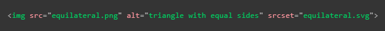

Incluirlo en un elemto "img"
Esta es la forma más rapida de hacerlo, para esto solo se necesitaria los atributos de width Height para delimitar el tamaño en el caso de que no posea una relación de aspecto inherente
Ventajas
Sintaxis simple con el texto aquivalente en el atributo "alt"
Se puede convertir la imagen facilmente al incluir el "img" dentro de un "a"
El navegador puede almacenar el SVG en la cache lo que resulta en tiempos de carga más rapidos para las paguinas que usen la imagen
Contras
No se puede manipular la imagen con JavaScript
Si se desea incorporar CSS a la imagen se debe de incluir en el codigo SVG de otra forma no tendra efecto
No puede cambiar el estilo de la imagen con pseudoclases CSS (como :focus).
Compatibilidad con verciones anteriores de los navegadores
Ya que las imagenes vectoriales (SVG) solo son ejecutables en verciones recientes de los navegadores, por lo tanto en aquellos casos en los que el usuario acceda a la paguina desde uno desactualizado este no podra visualizar los archivos SVG por ello para exitar que la experiencia del usuario se vea afectada existe una forma de solucionar la compativilidad con estos casos,
Para los navegadores que no admiten SVG lo recomendable es hacer referencia a una imagen rasterizada como png o jpg y usar el atributo "srcet" para hacer referencia al archivo SVG, ya que solo los navegadores actualizados reconocen este atributo seran capases de visualizar adecuadamente la imagen SVG mientra que los que no visualizaran la imagen rasterizada, el codigo resultante seria el siguiente.

Tambien se puede incorporar una imagen SVG como imagen de fondo del sitio web usando la tactica de compatbilidad expuesta anteriormente sin embarogo al hacerlo esta sujeta al mismo tipo de restricciones, esdecir no podra ser manipulado por JavaScript y podra interactuar de forma limitada con el CSS, el resultado seria el siguiete.
Nota: Si las imagenes vectoriales no se visualizan el el sitio web pudiese deberse a que el servidor no esta configurado correctamente para ejecutarlas.